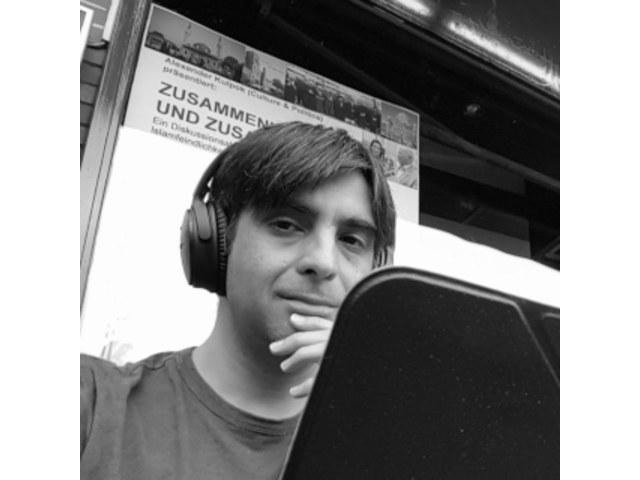
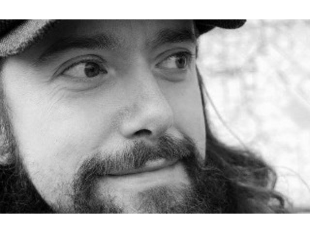
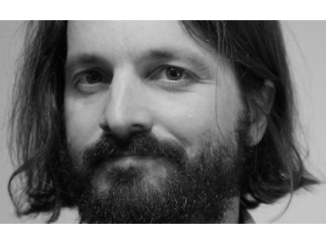
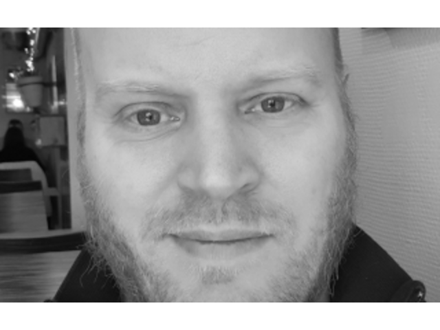
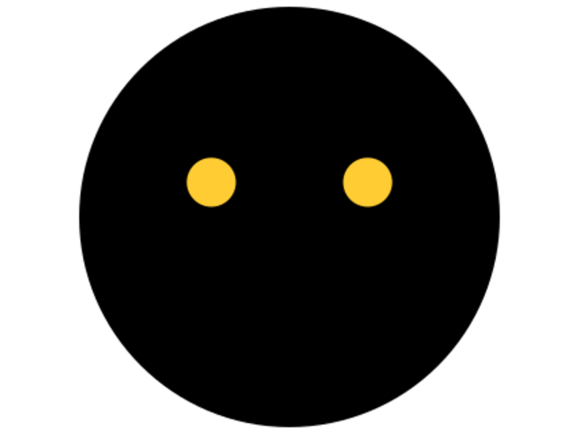
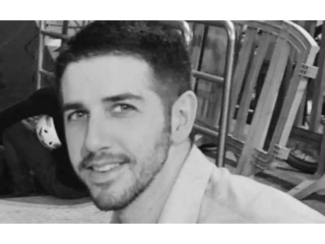
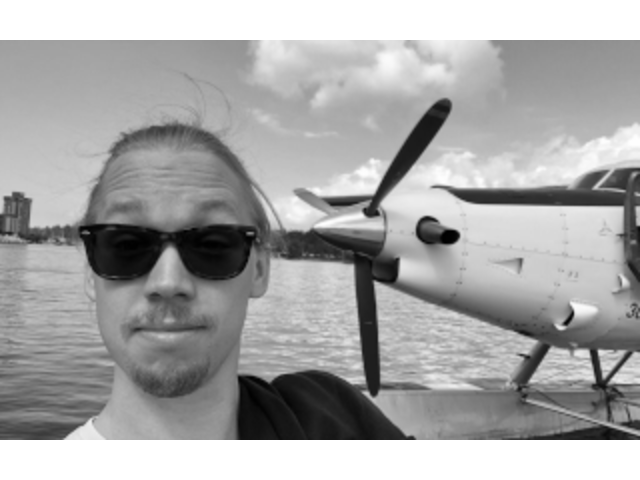
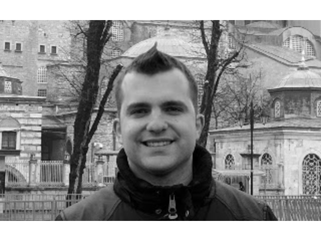
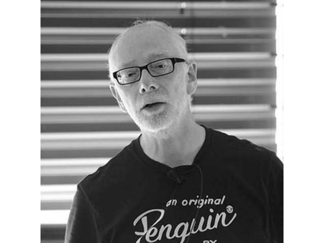
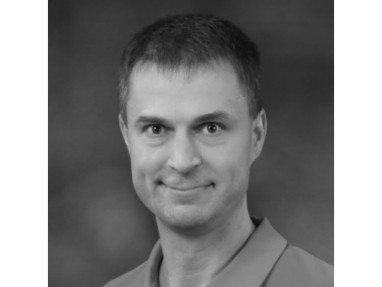

Speakers and Talks

Alexander
Anonymity loves Diversity: The Case of Tor
Tor is an anonymity network consisting of relays run by thousands of volunteers around the world aiming at giving back privacy on the Internet. The network carries around 200 Gbit/s of traffic and helps somewhere between 2,000,000 and 8,000,000 users every day.
In this talk, we will explain why diversity is essential for reaching the desired security and anonymity properties. Both for the Tor Project organization itself, but also for our community, as well as in our daily work with creating privacy-enhancing tools such as the Tor Browser or safeguarding the network itself against attackers.
Alex is a Free software minded hacker from Copenhagen who enjoys working on privacy-enhancing technologies, cryptography, security, and distributed systems. I'm a Core Developer with The Tor Project, where I work on Core Tor.

Zeeshan Ali
Writing safe & secure code, easily
This talks builds up on the great talk from the famous Daniel Stenberg titled "Writing safe and secure code" last year at foss-north. In their talk, they shared their story and wisdom on what steps to take and which tools to use to ensure that the code you write in unsafe languages, like C and C++ can be made to be very safe and secure. While all the information presented in that talk was completely accurate and all the advice given, was indeed very sound, I felt it fell short of recognising some of the modern technologies that can make the process much easier and a reliable.
One such major technology, is Rust programming language. Rust was designed from ground up to be both efficient and safe. Its focus on efficiency, means that it gives you a similar performance (and even better in certain cases) to C and C++, while simultaneous, its focus also on safety means that most common types of memory issues of C and C++ just can not happen with Rust code.
In this talk, I will present how exactly Rust allows you to do that through code samples. I will also demonstrate how Rust helps to catch runtime issues, that the compiler can not possibly catch, early on by enabling you to write tests more easily.
Free Software developer, Ecomodernist, into flying & Rust, and love cats. The Hat is Red.
Bolaji Ayodeji
Effective Documentation: The Key to Open Source Growth
When developers use and contribute to open source projects, effective documentation can make all the difference between a positive experience or a negative experience. Providing effective documentation can build healthy and inclusive communities, thereby increasing the usability and retention rate of your product/ project, but most often, open source creators produce ineffective documentation.
In this talk, Bolaji will introduce you to unique documentation strategies that will enable you to create good, timely, useful, accurate and sustainable documentation alongside explaining the benefits of these strategies, and how you can build a documentation community around your contributors.
Bolaji is a Front-end Developer, GitHub Campus Expert, Open Source Advocate and Technical Writer who currently works in Developer Relations at Hashnode. He's passionate about Web VR experiences and developing JAMstack + PWA applications with a significant focus on accessibility alongside supporting and sustaining FOSS.

Jakob Bornecrantz
FOSS Virtual & Augmented Reality
In this talk will cover Monado and Khronos' OpenXR standard, and give an overview about the current state of open source VR and what lies ahead. Also go into some details of how tracking is done inside of Monado and show of the current state.
VR took off for the consumer with the release of Oculus consumer hardware. But the hardware lacked open source drivers and Linux support in general. The consumer VR space has now grown from a kickstarter campaign into a large industry. But this growth has its down sides, multiple companies have their own APIs competing. Luckily these companies have agreed to work on a single API under the Khronos umbrella. Now that OpenXR has been released and and the Monado project has been getting more stable it is now possible to do good VR on a completely open stack.
Jakob works for Collabora with graphics and virtual reality, XR Lead at Collabora and a member of the OpenXR working group. He has worked with Linux graphics since 2006, starting with Tungsten Graphics and moving into VMware. In 2013 he along with a friend started the OpenHMD project, then in the spring of 2019 was involved in launching both Monado and OpenXR at GDC.

Valentin David
Building Open Container Initiative images based on Freedesktop SDK
The conventional approach to building container images starts by importing a base image of a Linux distribution. Then a Dockerfile is used to install the software stack. Part of it might be installed into the image through the distribution's package, while the other part might be built from source. The integration of such an image requires multiple steps. The complexity of distribution packages is not that well suited for the simplicity of container images. Maintaining software builds from source through Dockerfile is also unpractical. This complexity makes it hard to maintain a container image. Freedesktop SDK is a base runtime for Linux desktop applications using Flatpak. We have used BuildStream as an integration tool to build the image without requiring depending on a distribution. The approach used also translates easily to layered Open Container Initiative (OCI) images through a BuildStream plugin. This talk will show how (multiple) OCI images can be fully built in one pass from a BuildStream specification.
I am a French national lost in Norway working for British company Codethink. I maintain Freedesktop SDK.

Anne-Marie Eklund-Löwinder
Signing the Internet root zone
During her presentation Anne-Marie will tell the story of the recurring ceremonies with DNSSEC key generation for the internet root zone where she attend as a Crypto Officer. What, why, when and how. It's about routines, design and arcitechture, key management and layer and layer of security. Mostly physical.
Anne-Marie Eklund Löwinder is the Chief Information Officer at The Swedish Internet Foundation and an information and IT security expert. She can answer most questions about strategic information and IT security for both businesses and ordinary users, such as current management systems for information security and ISO 27001, as well as questions about encryption, passwords, security on smart gadgets, cloud services, and networks. She is a specialist in managing DNSSEC and other security efforts which surmises to develop and advance the security of the Internet infrastructure.
Anne-Marie is one of the few people in the world who has been assigned as Trusted Community Representative in the role as a Crypto Officer where she participates in the DNSSEC key generation for the internet root zone as Crypto Officer, having been appointed by the international organization ICANN (the internet Corporation for Assigned Names and Numbers). She is also a member of The Registry Services Technical Evaluation Panel (RSTEP), a technical team under the GNSO (Generic Name Supporting Organization). RSTEP's primary responsibility is to, if necessary, participate in the evaluation of applications for new generic top-level domains (gTLDs).
In 2013 Anne-Marie was the first Swede to become inducted into the Internet Hall of Fame where she ends up in the company of, among others, Internet pioneers like Vint Cerf and Steve Crocker.
Patrik Fältström
Keeping Time
In this presentation Patrik will dive into the fun things related to time and frequency, explain how NTP can be secured with the help of TLS (to a mix called NTS), and how one can minimize the phase error between two frequency sources.
Patrik Fältström have been working with the internet related issues in Sweden since around 1985. He has specialized in security and specifically robustness. Open standards and things he likes and he has contributed to many of them, specifically in the IETF in the form of Internationalized Domain Names (IDN) and ENUM. In the day job he is technical director and head of security at Netnod in Sweden which focuses on infrastructure services like IX, DNS, time and frequency.
Patrik have been advisors to many, including the Swedish Government, and worked at Tele2, Cisco, KTH and the Royal Swedish Navy.

Georg
Anonymity loves Diversity: The Case of Tor
Tor is an anonymity network consisting of relays run by thousands of volunteers around the world aiming at giving back privacy on the Internet. The network carries around 200 Gbit/s of traffic and helps somewhere between 2,000,000 and 8,000,000 users every day.
In this talk, we will explain why diversity is essential for reaching the desired security and anonymity properties. Both for the Tor Project organization itself, but also for our community, as well as in our daily work with creating privacy-enhancing tools such as the Tor Browser or safeguarding the network itself against attackers.
T.B.D.

Gustav Grusell
FOSS made us do it - How switching to open source tools enabled video innovation
Allthough the current encoding pipeline for online video at SVT was built on open source technology like spring boot, mariadb, redis, etc from the start, until quite recently the core functionality of encoding and packaging of video was implemented with proprietary tools. This talk will describe how we came to replace the proprietary tools with open source tools, and how this have had a very positive impact on our work with improving the quality of our streaming services.
Working in the videocore team at SVT as Developer/Scrum master/Open source lead.
Got introduced to linux and the open source world by my father in the mid-ninetees and has been a loyal user ever since. Been working as a software developer for the last fifteen years, with focus on java/spring. Since starting at SVT four years ago I have developed an interest in videoencoding/streaming.
Kristoffer Grönlund
Introducing Rook
Ceph is a free software cluster storage solution that enables near-infinite scaling on commodity hardware, and Rook is a project that brings Ceph to Kubernetes as a storage provider, as well as other open source storage solutions. In this presentation I will do my best to introduce these technologies, talk a bit about what makes them unique and perhaps provide some motivation for when and why they may be relevant to you.
Kristoffer lärde sig programmera på en Commodore 64 med drömmar om att en dag bli spelutvecklare. Efter att ha levt drömmen på Massive i Malmö i ett antal år växte intresset för fri mjukvara, och numera jobbar han på SUSE där han länge hackade på diverse High Availability-projekt och nu i huvudsak hackar på Ceph och Rook. Han är även en tredjedel av Kodsnack, en podcast om programmering och livet som utvecklare på svenska.

Kamil Kaluzny
Robotic Process Automation based on OpenSource
Robotic Process Automation based on OpenSource - the pros and cons of using OpenSource in RPA.
For 13 years he has been delivering, designing or managing projects and organizational units related to quality management, IT systems and business processes. The main areas of interest are monitoring systems, automation and robotics for corporate clients and government. Experienced in OpenSource and commercial enterprise software. Manager and IT engineer specializing in security of information and buildings. A graduate of the 7th edition of the Executive MBA at the Polish Academy of Sciences.

Pavel Kopylov
Hacking the legal code of an open source license
Any piece of an open source software is distributed under the terms of an open source license. A license is a binding contract and you must comply with the terms of any and all relevant licenses used in your product. Some licenses are only 2-3 paragraphs of clear-cut text, others are 2-3 pages of legalese jungle. To understand which terms apply to your project, you have to read and interpret the licenses yourself… or call the lawyer. The good news is that while all the different agreements are unique, there are several key concepts. Regardless of how much experience with foss licenses you have or how savvy you are at reading legal texts, you can easily navigate provisions of any license using these key concepts that would be presented during the talk.
Pavel is a business professional and educator assisting projects of various sizes aiming at maximising the value created by intangible assets. In most projects that Pavel works with the value is created from software based on numerous open source libraries.

Gabriel Ku Wei Bin
REUSE: Making Free Software Licensing Easier For All
Developing Free Software is fun, but dealing with the licensing and copyright information is not. The REUSE project changes that: with three simple steps, it makes adding and reading licensing and copyright information easy for both humans and machines.
If you want to grant users the freedom to use, study, share, and improve your software, you have to grant those freedoms in the license of the software. To encourage people to develop Free Software, the FSFE helps developers to understand and apply Free Software licensing. REUSE contributes to this goal. Any project following the initiative's recommendations makes copyright and licensing information readable to both: humans and machines. This way, we want to ensure that individuals, organisations and companies who are re-using code are aware of the license terms chosen by the original author.
REUSE is also a big part of the FSFE's involvement with the Next Generation Internet Zero (NGI0) Initiative, a European Commission project aimed to assist developers in contributing to the establishment of an internet that enhances society, not exploit it.
T.B.D.
Olof Lindman
FOSS made us do it - How switching to open source tools enabled video innovation
Allthough the current encoding pipeline for online video at SVT was built on open source technology like spring boot, mariadb, redis, etc from the start, until quite recently the core functionality of encoding and packaging of video was implemented with proprietary tools. This talk will describe how we came to replace the proprietary tools with open source tools, and how this have had a very positive impact on our work with improving the quality of our streaming services.
Online Video Workflow Engineer at Sveriges Television. MSc.E.
I have been working with subjective video quality at SVT Play for about 2 years. I enjoy challenging and innovative work where I am constantly trying to balance improvements of visual quality with constraints from device compatibility and distribution cost.

Johan Linåker
Opening up the Swedish Labour Market Through Cross-sector Collaboration
JobTech Dev is an initiative from the Swedish Public Employment Service where the goal is to create a common platform of open source software, data, and standards for private actors and citizens to build on. Envisioned outcomes include a higher variety of services and better matching for employers and job-seekers, as well as a lower barrier to entry for new job-matching service provides.
We will present an overview of the platform and share a public-sector organization's rationale for sharing software as open source. Attendees will further get insights into the potential value and ways of extending collaboration and co-creation beyond open source software to also include related open data and standards.
We will also present opportunities as well as challenges that the Employment Service has experienced while adopting a platform approach, as well as the open source way of working required when growing and working with a community. Lessons learned will be contrasted to those commonly experienced among companies that's undergone similar journeys.
Johan is a postdoctoral researcher focusing on how the public sector can create platforms with open data and software on which ecosystems of actors can innovate through cross-sector collaborations. In his Ph.D., he focused specifically on helping companies make contributions and engage with communities in alignment with business goals. He sits on the advisory board for Hack for Sweden, the Swedish governments gov-tech initiative for enabling open and data-driven innovation. He is also the founder of OpenHack, a non-profit tech-community solving real-world challenges connected to the global goals in Agenda 2030.
Elisabet Lobo-Vesga
Privacy-preserving statistical analyses
Large amounts of data are being collected about IoT systems---a tendency known as big data. Much of the collected data is private: it contains details about individuals and their behaviour. Privacy concerns about individuals restrict the way that such a huge amount of information can be used and released. In this light, information collected by IoT devices must be handled in a way that users' privacy gets preserve and thus comply with ethical, legal, or business reasons.
It is often believed that data can be just anatomized somehow in order to preserve the privacy of individuals. Simple removing some identifiers or data fields from a dataset is not enough. There are notorious cases that illustrate that traditional disclosure techniques lack rigorous analysis and guarantees, where re-identification attacks are possible.
Differential privacy, a concept originated in academia, is currently the only mechanism that rigorously captures the trade-offs of adding noise to a query to protect the privacy of individuals while enabling to extract useful insights from it. However, adding noise might reduce how meaningful queries' results are in favour of privacy---e.g., in the extreme case, a completely random answer preserves privacy but is rather useless.
In this talk, we will present DPella, a programming language being developed at Chalmers University, which enables developers to write differentially private queries, while enabling to study how meaningful the result of the queries are. We will show how to securely implement traditional statistical analyses with DPella (e.g., histograms, cumulative distributed functions, etc.), thus allowing to mine useful information for sensible datasets gathered by our IoT devices.
This talk is based on a joint work with Alejandro Russo (Chalmers University), Marco Gaboardi (University at Buffalo) and Gilles Barthe (MPI-SP and IMDEA Software Institute)
I am a PhD student in the Information Security division at Chalmers. I'm interested in exploring the usage of embedded domain-specific languages (EDSLs) in Haskell to provide privacy or security guarantees for different applications. For the past year, I've been working on creating a framework for privacy-preserving queries---under differential privacy---that allows programmers to reason about the accuracy of the queries statically.

Ron Munitz
Understanding, Building and Researching Minimal (and not so minimal) Linux Systems
In this tutorial, we will give you the tools to build your Linux Distro, and give you the rational of the different components that make Linux. We will start with what happens when a device is powered on , tell a bit about some x86 and ARM bootloaders, and simplify (and unify) the procedures so that we concentrate on how the Linux Kernel is loaded, and what it needs in order to do something that is "useful" for most users/developers - such as loading the first userspace program, which may or may not load the next one, which may or may not...
Once we have shown how to build and boot our minimal Linux distro (which we will build with an upstream kernel and busybox and run with KVM/QEMU), we will show some super simple yet extremely powerful debugging (and memory forensics...) tricks. We will show how to build and load a simple kernel module, as well as a simple executable. Once we saw how "complicated" it is, we will see how to do it with Yocto Project, and why it is needed :)
Ron Munitz, CEO of The PSCG Premium Consulting group, is a parallel entrepreneur, specialising in Operating System internals and Embedded Security. His experience ranges from esoteric real-time operating systems and all kind of Industrial devices to anything Unix/Linux flavoured, with renowned expertise on the Linux kernel, XNU Kernel and Android and MacOS ecosystems. Ron is an experienced lecturer, who has trained thousands of engineers for The PSCG, ARM and the Linux Foundation, and has initiated and led cybersecurity tracks in several universities. When not teaching or consulting, Ron is leading PSCG Holdings LTD, a house of excellence for entrepreneurs-researchers, active in the Aerospace, Maritime, Automotive and Mobile cybersecurity domains. In his previous lifetimes, Ron founded Nubo Software, the first Android display protocol, brought up Linux and some RTOS's on more boards than he can remember, did all kinds of security related work ( ;-) ), and led the development of a couple of satellite launchers ( ;-) ;-) ).

Viktor Petersson
The history of how Screenly OSE became the most popular digital signage project on GitHub
Many moons ago, Viktor had a problem. Due to a strange series of events, he was put in charge of building a digital signage software in just two weeks. As an Open Source enthusiast, he naturally built this by gluing together various Open Source components and running on small Asus Linux boxes. It wasn’t pretty, but it did in fact work. This turned out to be the precursor to Screenly OSE, which is now the most popular digital signage project on GitHub and is powering 10k+ of Raspberry Pis around the globe.
In this talk, Viktor will share his experience from this journey, and the lessons learned along the way, as well as how he turned this hobby project into a thriving remote-only software business.
While still in college Viktor co-founded the software company WireLoad, Inc which grew into a thriving business with multiple products. WireLoad's latest product, Screenly, has grewn to become the most popular open source solution on Github, powering thousands of screens around the world, all powered by Raspberry Pis.
Most recently, Viktor co-founded WoTT to help tackle the mess that is IoT security by making it easy for developers to adopt industry best-practices for their fleet of devices.

Dimitrios Platis
Using open source paradigms to teach system development
Developing a system comprised of both software and hardware components comes with its extra set of challenges. Hardware gets delayed, the team that works closer to the electronics has to sync with the ones hacking on the cloud or the app, arguments erupt over unilateral assumptions about how things should be, etc. On the other hand, it is particularly rewarding seeing your efforts materialized in a physical form and the customers naturally interacting with your precious device.
Software Engineering students at the University of Gothenburg, as part of their compulsory curriculum, are offered a course on systems development. They work in teams and are given a small robot development platform with the task to create a multitier product around it. They are inexperienced, with different availability, priorities and expectations, but full of creativity.
How do we teach them to avoid the common pitfalls we witness in the industry? How do we facilitate collaboration between individuals engaged in separate parts of the system? How do we inspire them to establish a repeatable, well-defined development process? How do we convince them to build a robust and valuable system with the discipline of an engineer along with the freedom of an artist?
In this talk, we are going to illustrate how we address these issues through the adoption of best practices common in open source projects and organizations. Combined with freely available tools, we enable and inspire the students to follow industrial standards and eventually produce better engineers for the future.
Dimitrios works at Edument in Gothenburg and calls himself a Software Engineer and a Maker. During the days he develops and delivers Edument's courses on C++ while hacking on embedded systems of all shapes and sizes as a consultant. Additionally, he is the course responsible for the DIT112 course at Gothenburg University, where Software Engineering BSc students learn about System Development.
The evenings are all about creating open source projects and then blogging about them. Favorite fields revolve around IoT, robotics and handheld gadgets where he loves to build the entire product stack. Hardware-wise, this includes everything from the PCB to the physical case and, software, from the embedded firmware to the cloud.

Francisco Blas Izquierdo Riera
Lessons learnt integrating hardware full disk encription
We are at a stage on which most distributions can just use cryptsetup as a normal part of their boot process to decrypt an encrypted partition. But as you drift away from the usual "user enters password to decrypt single partition model", you keep finding more and more hurdles. In this talk I will talk about my experiences integrating full disk hardware encryption (with OPAL) without user interaction as a way to secure unattended systems against data theft. After this talk you will gain an understanding on what is OPAL and how it interacts with the usual boot process of Linux systems.
Francisco has always had the curiosity inherent to hackers to take apart things to see how they worked and even fix them. He even learnt how to use MS-DOS with 7 years so he could play Commander Queen on his father’s computer. But, although things looked as if he was just going to be a computer programmer, after spending a summer reading Bruce Schneier’s applied cryptography and taking part, after lots of persuasion by the organizers, on a CTF competition where he wrote his own tools; things started escalating quickly. Since then Francisco has done things like participating in some CTFs, becoming a Gentoo Hardened developer, writing an Arduino bootloader able to cryptographically verify updates, contributed cryptographic code to the Haskell community, written a fast implementation of the TTH algorithm and championed the introduction of new standards in the ADC protocol. Having seen the world from different angles in his prior positions, currently, Francisco is working as a PhD. student at Chalmers with the Resilient IOT project whilst taking small consultant jobs on the side.

Chris Simmonds
Debian or Yocto Project? Which is the best for your Embedded Linux project?
As you contemplate how to put together the system software for your next Embedded Linux project you will probably be wondering which is the best path to take? Use a Linux distro such as Debian, (or another of your choosing), or create a custom operating system using Yocto Project (or Open Embedded or Buildroot). At first sight, Debian looks easy, especially if you are using a Raspberry Pi, a BeagleBone or another board with a pre-installed Debian-derived system. So, why go to all the trouble of replacing it with Yocto?
In this talk I will show you the strengths and weaknesses of each approach, using real-world use cases as examples. Spoiler alert: my conclusion is that … it all depends what you want to do. Debian is great for fast implementation and proof-of-concept, but for long term maintainability and control of the platform, you need Yocto. Now you need to come along to see why I believe this to be so.
Chris Simmonds is a software consultant and trainer living in southern England. He has spent almost two decades designing and building open-source embedded systems of all shapes and sizes, and he has encapsulated much of that experience in his book, “Mastering Embedded Linux Programming”.
He is a frequent presenter at open source and embedded conferences, including the Embedded Linux Conference and Embedded World. You can see some of his work on the “Inner Penguin” blog at www.2net.co.uk

Daniel Stenberg
curl better
Everyone uses curl. There are good uses, some bad uses and some lesser known gems that are good to know. Daniel takes us through how curl came to be this prevalent, the design think behind it and some clever curl tricks for consuming HTTP APIs and more
Daniel Stenberg is the founder and lead developer of the curl project. He has worked on HTTP implementations for over twenty years. He has been involved in the IETF for twelve years and he worked on the HTTP stack in Firefox for several years at Mozilla. He participates in the QUIC working group and is the author of the widely read documents "HTTP2 explained" and "HTTP/3 explained". Employed by wolfSSL.

Jonas Södergren
Opening up the Swedish Labour Market Through Cross-sector Collaboration
JobTech Dev is an initiative from the Swedish Public Employment Service where the goal is to create a common platform of open source software, data, and standards for private actors and citizens to build on. Envisioned outcomes include a higher variety of services and better matching for employers and job-seekers, as well as a lower barrier to entry for new job-matching service provides.
We will present an overview of the platform and share a public-sector organization's rationale for sharing software as open source. Attendees will further get insights into the potential value and ways of extending collaboration and co-creation beyond open source software to also include related open data and standards.
We will also present opportunities as well as challenges that the Employment Service has experienced while adopting a platform approach, as well as the open source way of working required when growing and working with a community. Lessons learned will be contrasted to those commonly experienced among companies that's undergone similar journeys.
Johan is a postdoctoral researcher focusing on how the public sector can create platforms with open data and software on which ecosystems of actors can innovate through cross-sector collaborations. In his Ph.D., he focused specifically on helping companies make contributions and engage with communities in alignment with business goals. He sits on the advisory board for Hack for Sweden, the Swedish governments gov-tech initiative for enabling open and data-driven innovation. He is also the founder of OpenHack, a non-profit tech-community solving real-world challenges connected to the global goals in Agenda 2030.
Lightning Talks
Register at the registration table for your 10 minutes of fame!
Speakers are in the video, slides above.